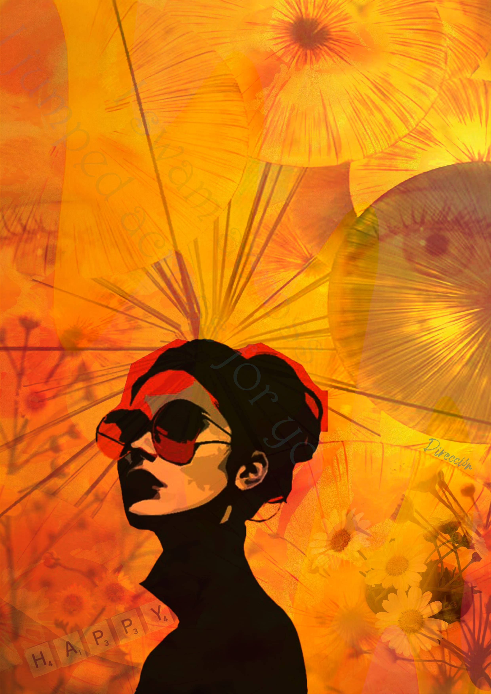
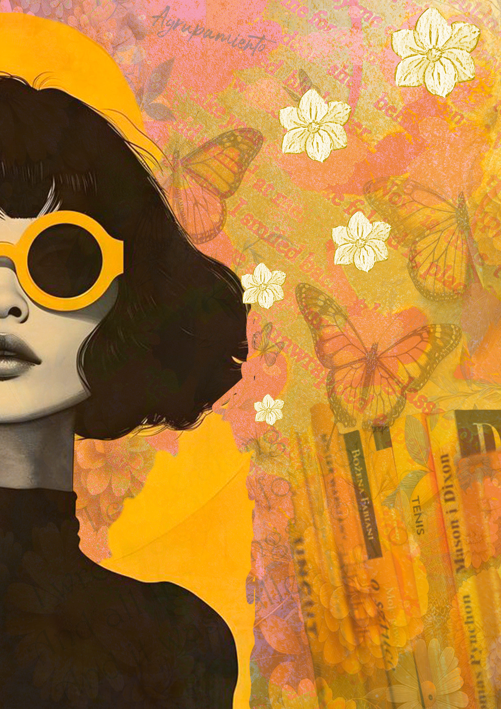
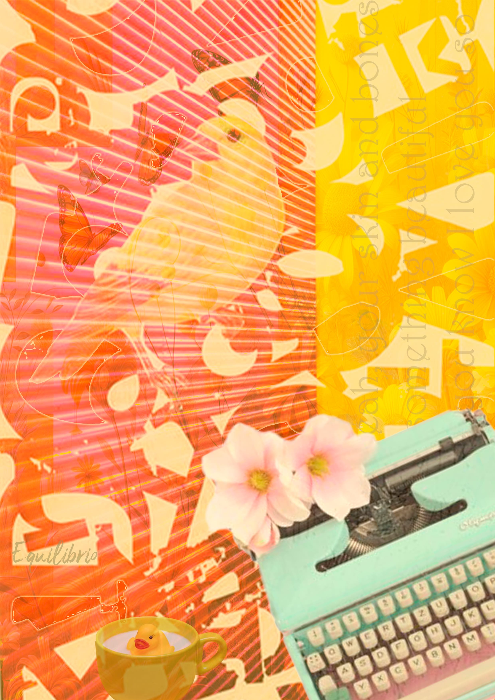
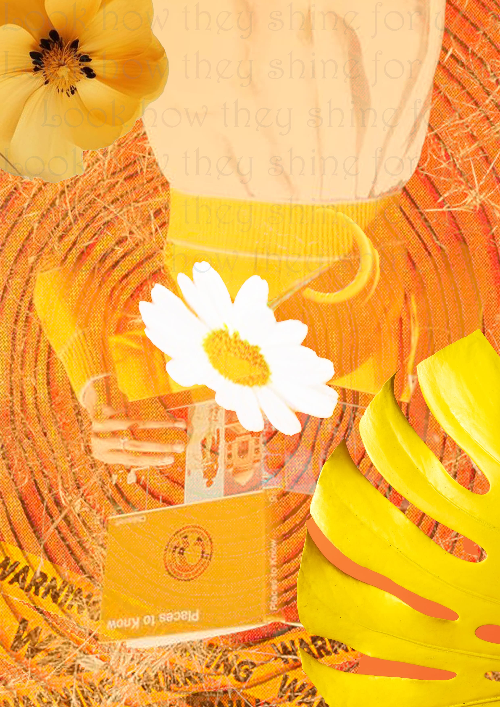
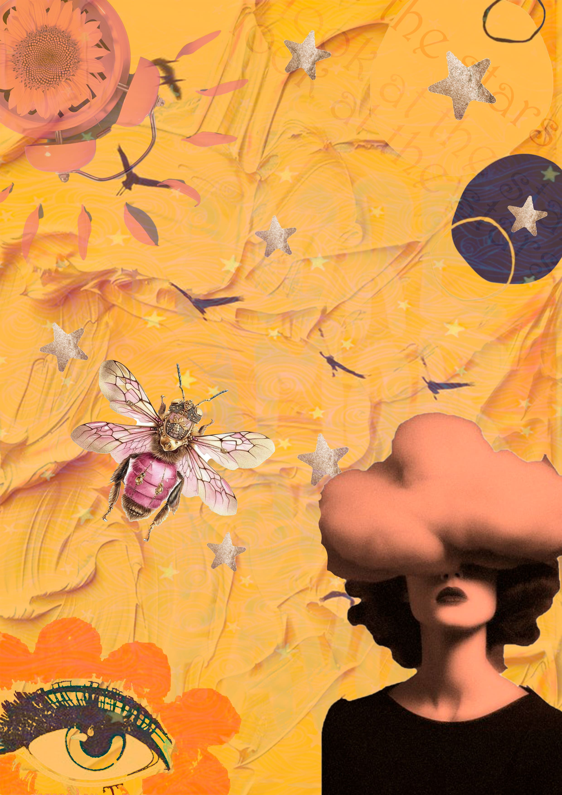
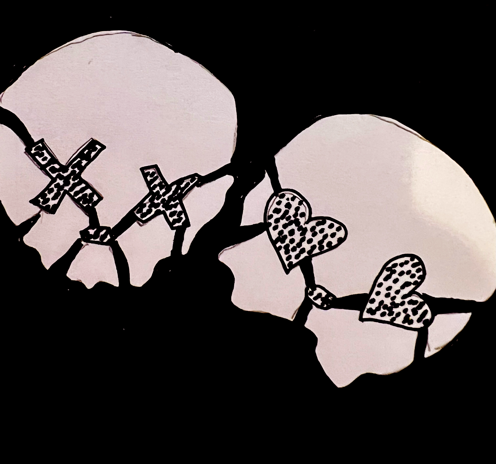
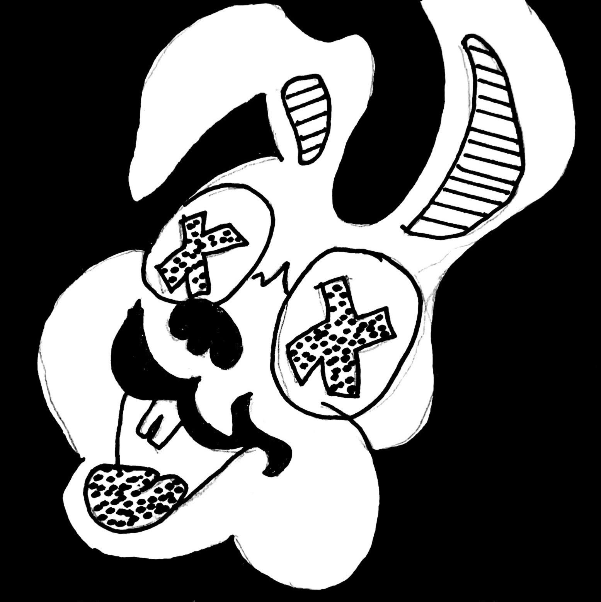
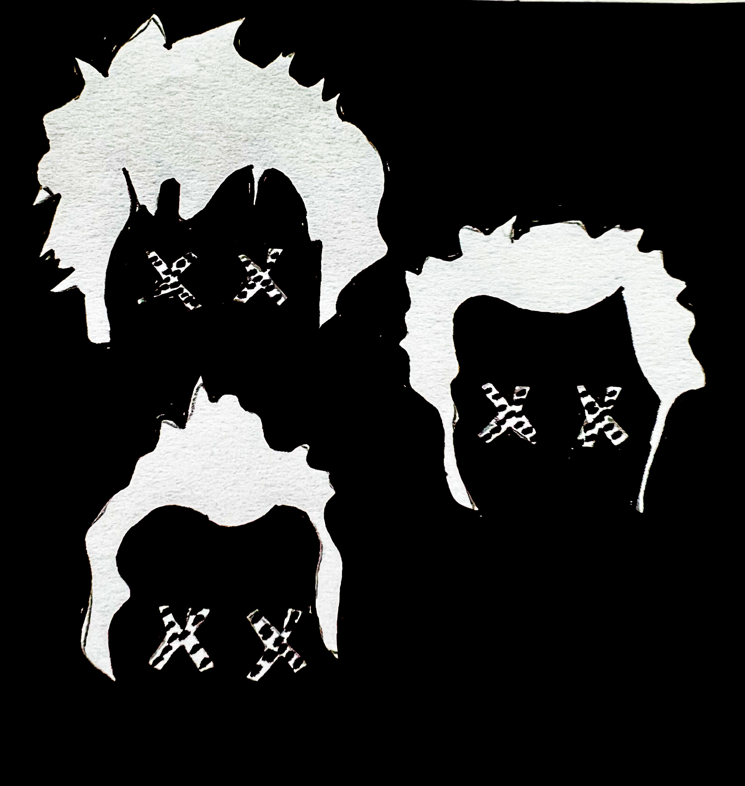

Arte &
Experimentación
Trabajos visuales donde exploro composición, música, fotomontaje e ilustración.
Período Amarillo
Fotomontaje experimental trabajado a partir del color, la composición y la intervención visual.





Billie Joe Armstrong
Composición visual inspirada en la música, la estética punk y la identidad gráfica de Green Day.


Dibujo Digital
Ilustración realizada con tableta gráfica, explorando trazo, color y expresión visual.

Green Day
Dibujos inspirados en tapas de discos de Green Day, reinterpretados desde una mirada personal.



